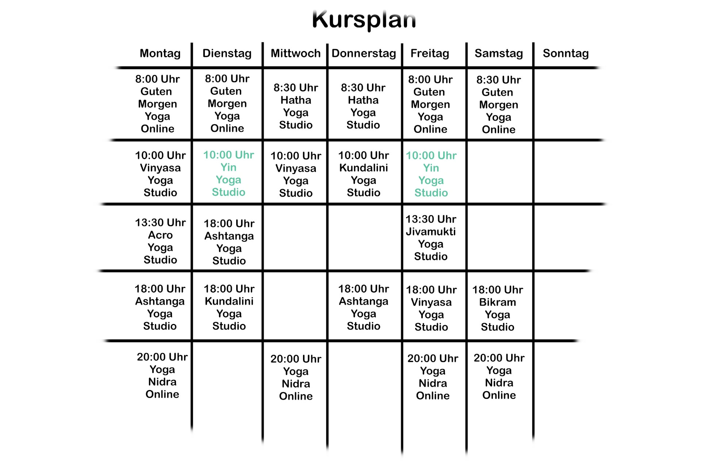
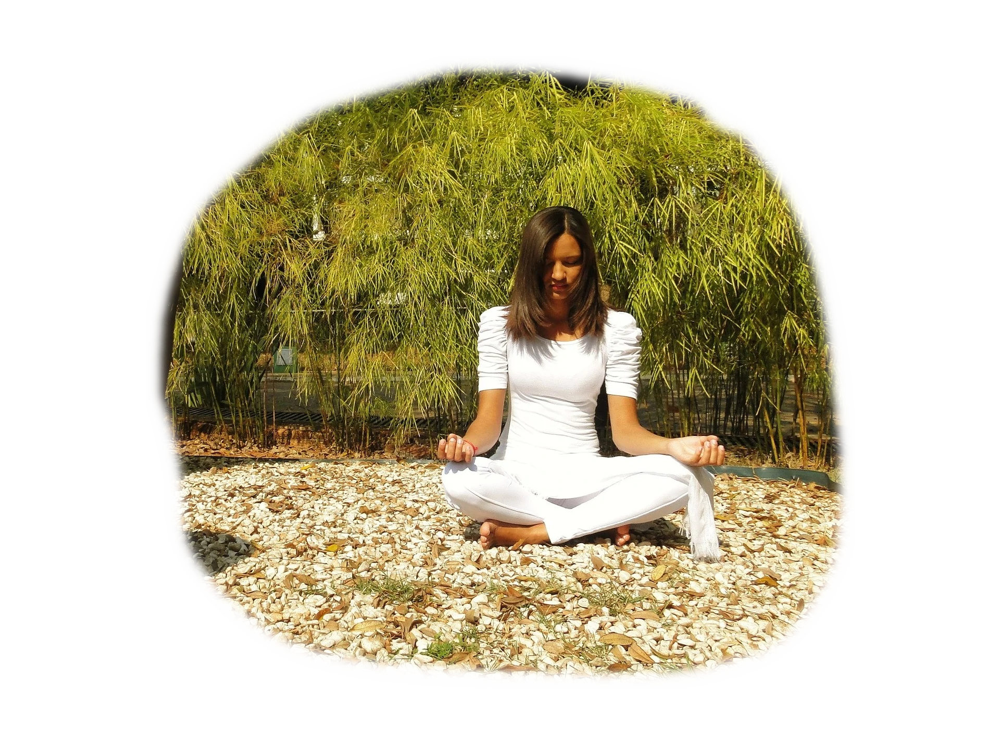
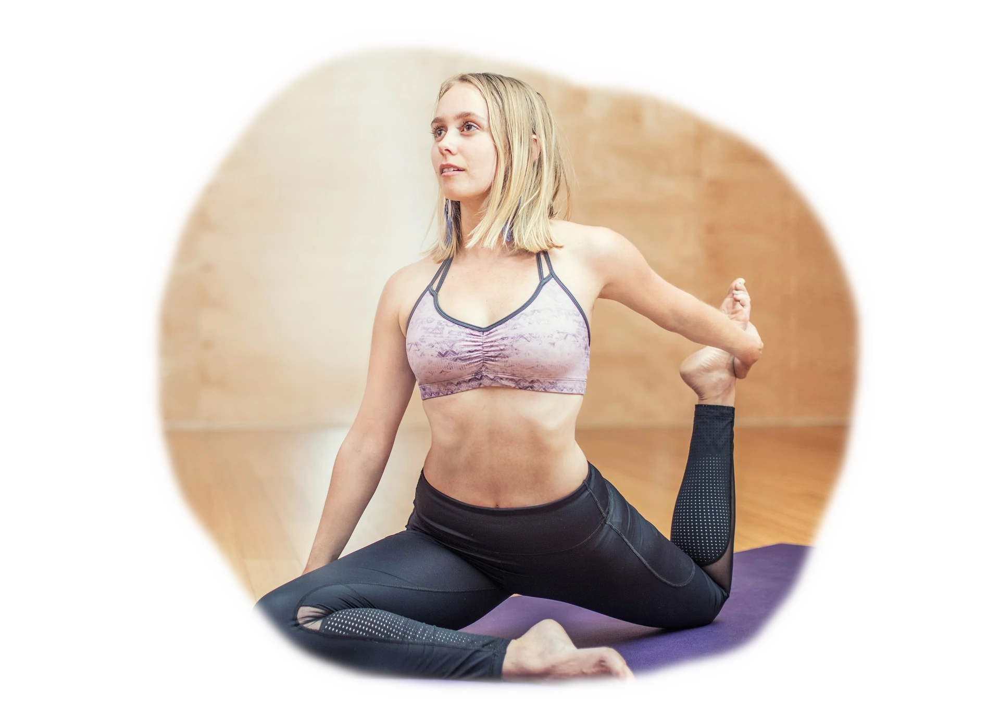

Yin Yoga ist ein langsamer Yogastil mit einem hohen Stretchinganteil.
Passive Dehnübungen, die zum Teil bis zu zehn Minuten gehalten werden, stehen im Fokus.
In jeder Stunde werden vier bis sechs solcher Asanas geübt. Yin Yoga kräftigt und fördert deine Flexibilität.
Die Yoga Art soll einen positiven Einfluss auf das Bindegewebe haben, die allgemeine Beweglichkeit steigern und den Geist beruhigen.
Dieser Kurs findet im Studio statt.


Besonderheiten und Wirkung von Yin Yoga
Yin Yoga ist eine meditative Annäherung an unser Innenleben mit gleichzeitigem Fokus auf die eigene Anatomie.
In der Yin-Yoga-Praxis schaut man ganz intensiv in sich hinein, man gibt sich seinen Emotionen hin,
wodurch man viel über sich selbst lernen kann. Die Asanas werden zwar in einer für den Körper relativ komfortablen Position gehalten,
allerdings kann das lange Halten, in der Regel zwischen drei bis fünfzehn Minuten, durchaus für viele Yogaschüler zu einer körperlichen Herausforderung werden.
Man sollte dabei immer gut auf seinen Körper hören und nicht von Anfang an an die eigenen Grenzen gehen.
Es ist, wie Stück für Stück in die Haltung zu sinken. Dadurch erhöht sich im Körper die Flexibilität der Muskeln und Faszien,
und es können zum Teil An- und Verspannungen gelindert und sogar komplett gelöst werden, wodurch der Fluss des Chi harmonisiert wird.
Durch das sanfte lange Ausharren in den Haltungen können aufgrund von Bewegungsmangel entstandene Degenerierungen und Fixationen – die
geradezu eine Epidemie in unserer sogenannten weiterentwickelten Kultur mit ihren an die Computer „geschweißten” und
sitzenden Menschen darstellen – wieder aufgelöst werden. Bei dieser ruhigen und meditativen Yoga-Praxis werden so viele Hilfsmittel wie nur
möglich eingesetzt – zum Beispiel Polster, Decken, Gurte, Klötze und Sandsäcke.
Im Yin Yoga sollte es darum gehen, den Körper zu erkunden und zu erspüren. Es geht bei diesem Yogastil allein um die reine energetische Arbeit mit dem Körper,
ohne Leistung erbringen zu müssen oder Anerkennung von anderen zu erlangen.
Dabei ist es wichtig, eine Achtsamkeit zu entwickeln und das „Hier und Jetzt” mehr zu spüren und sich dadurch seiner selbst
bewusster zu werden, ohne gedanklich in der Vergangenheit oder der Zukunft zu sein.
Kursleiterin Stephanie

Yin Yoga ist ein langsamer Yogastil mit einem hohen Stretchinganteil.
Passive Dehnübungen, die zum Teil bis zu zehn Minuten gehalten werden, stehen im Fokus.
In jeder Stunde werden vier bis sechs solcher Asanas geübt. Yin Yoga kräftigt und fördert deine Flexibilität.
Die Yoga Art soll einen positiven Einfluss auf das Bindegewebe haben, die allgemeine Beweglichkeit steigern und den Geist beruhigen.